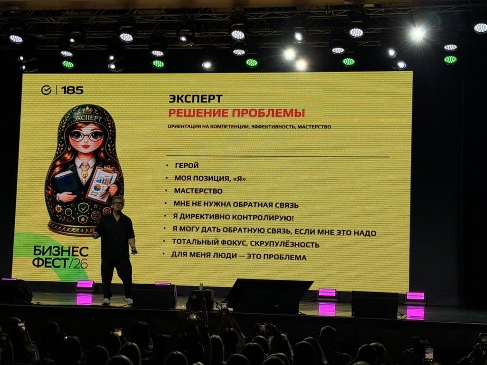
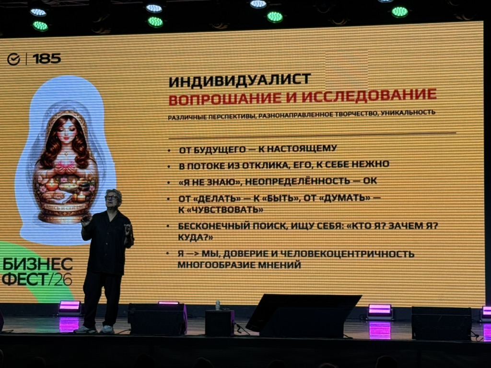
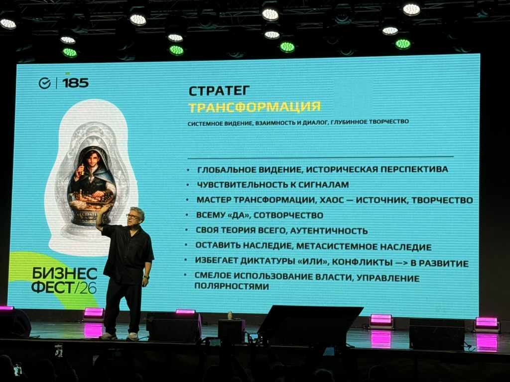
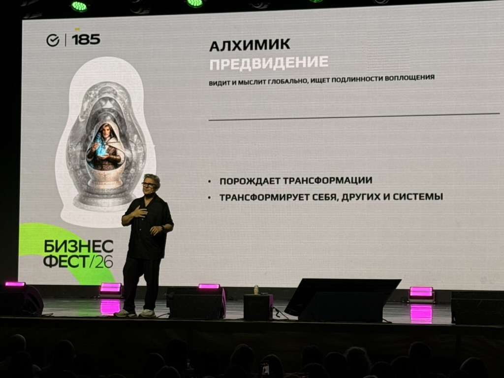
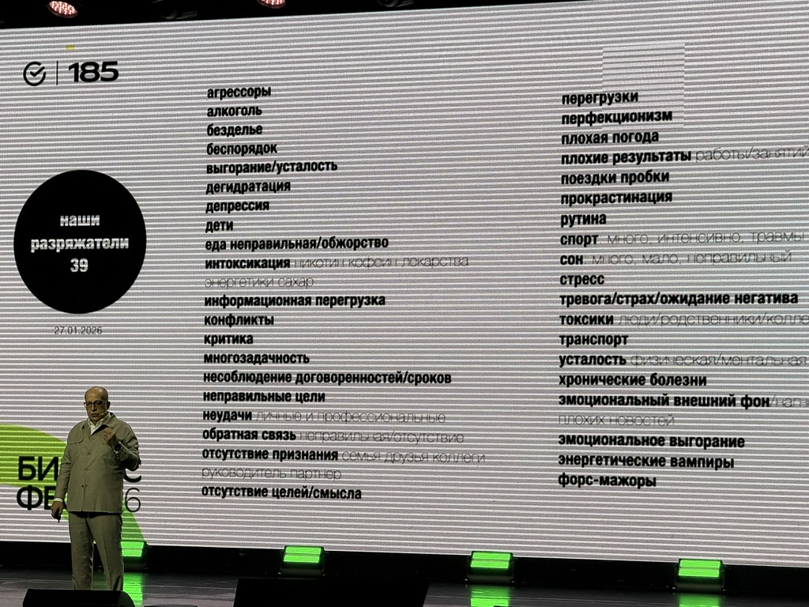
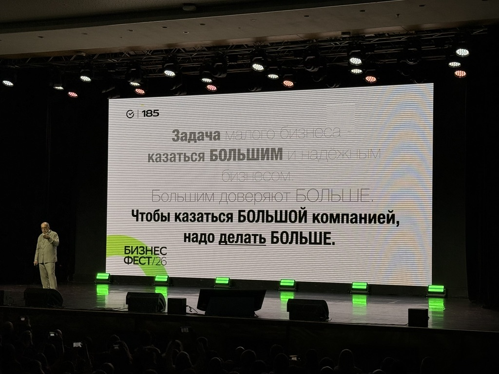
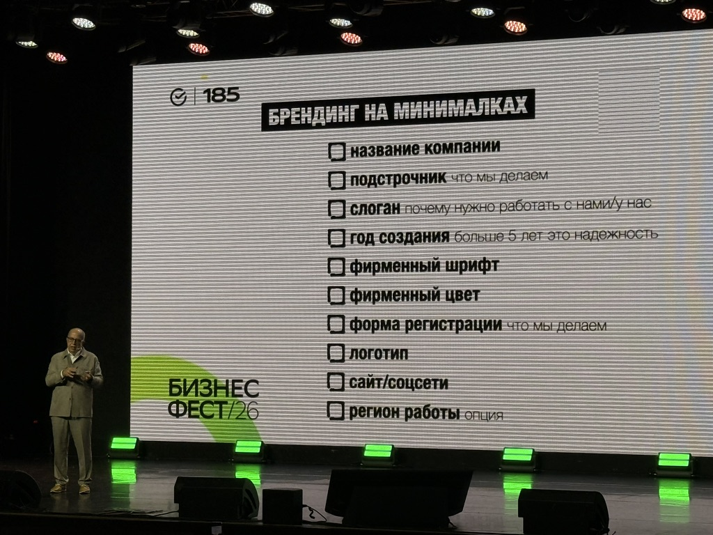
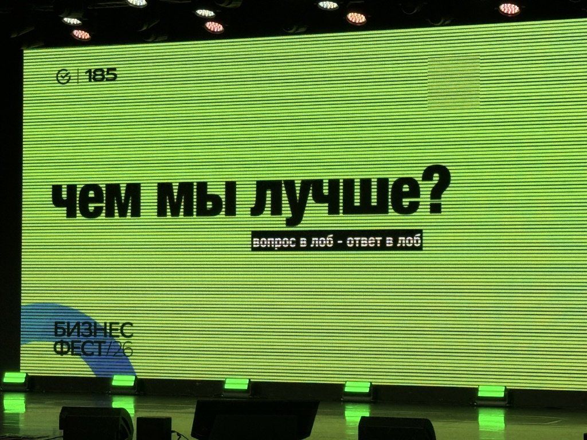
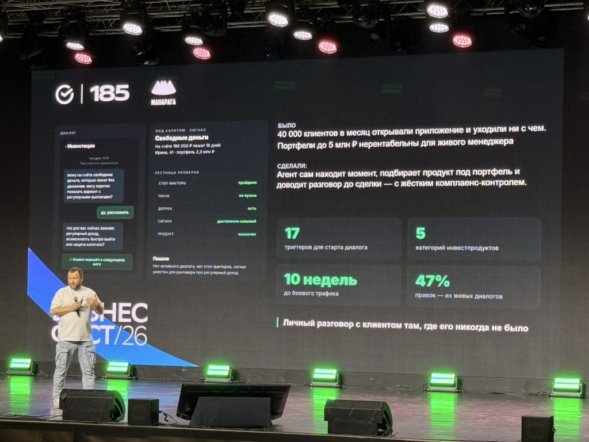
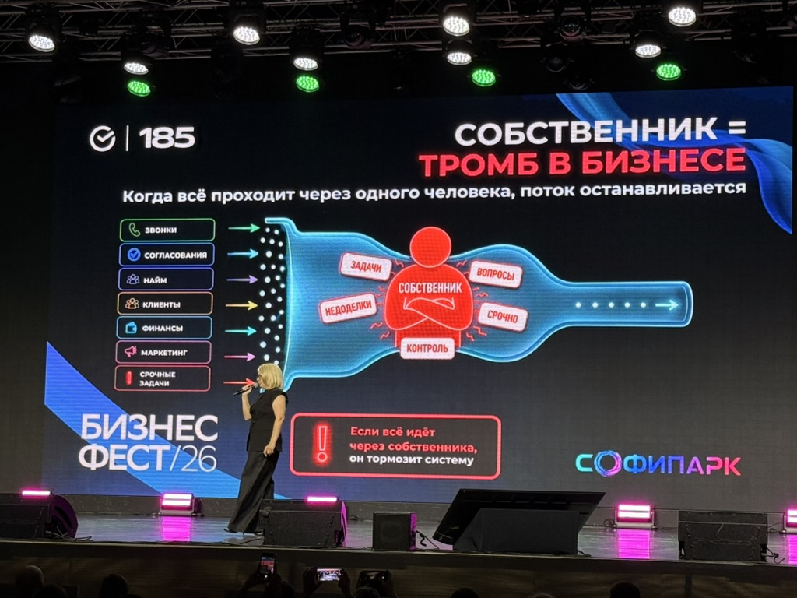

Первое, что мне понравилось, — очень много людей. Заполняемость была 100%. И это в первую очередь радует, потому что, несмотря на сложную ситуацию, есть много людей, которые тем или иным способом стараются повысить свою эффективность, что-то изменить, куда-то двигаться. Я встретил там несколько знакомых людей, пообщался, наверное с 14–15 предпринимателями.
И у меня за последнее время сформировалось одно наблюдение. Ситуация сложная, это все понимают. Но дальше очень сильно отличается реакция человека на эту ситуацию. Кто-то говорит: плохо, сложно, настроения нет, пришёл вот хоть развеяться немножко. А кто-то: да, сложно. Двигаемся.
Я уверен, что дальше будут двигаться именно те, кто уже перестал сопротивляться тому, что всё стало жёстче. Пришло принятие.
Условно говоря, появились с 1 сентября новые требования, ЭТрН у перевозчиков, всё стало сложнее. Можно возмущаться, почему это придумали, зачем это надо, что раньше было проще.
А можно сказать: хорошо, ситуация такая. Что мы теперь можем сделать? Как мы можем к этому адаптироваться? Как это автоматизировать? Как сделать так, чтобы человек руками не забивал одно и то же? Мне такой подход ближе. Я отношусь к тем, кто просто пытается адаптироваться к тому, что есть. Будет дальше по-другому — будем адаптироваться к тому, что будет по-другому.
А какой у предпринимателя другой выход? Сидеть, ныть, что всё стало не так? Ну хорошо. Какой от этого будет результат? Так легче? А время идет, и есть те, кто двигается дальше.
Считаю нам остаётся только адаптироваться.
И более того, я думаю, что адаптироваться теперь придётся постоянно.
Я уже смотрю даже на детей и думаю, что у них, скорее всего, вообще по-другому будет устроена профессиональная жизнь. Сейчас человек учится, выбирает профессию, например врач. Учится в институте, потом работает всю жизнь в этой профессии и уходит на пенсию. Понятно, не у всех так, но модель в целом привычная.
Думаю, что у наших детей уже, скорее всего, так не будет. Им придётся постоянно адаптироваться, потому что всё будет очень быстро меняться. Да что там наши дети. Как бы нам самим, людям 30–40+, ещё не пришлось несколько раз пересматривать свои профессии, бизнесы и вообще взгляды на то, чем мы занимаемся.
Я за искусственным интеллектом слежу буквально каждый день, потому что мы с этим работаем, развиваем это направление, применяем в компаниях наших клиентов. И скорость изменений очень большая. Изменения идут каждую неделю, обязательно за неделю есть очень серьезная новость по ИИ.
- Есть люди, которые внедряют.
- Есть те, кто смотрит.
- Есть те, кто принципиально отказывается. Сейчас таких иногда называют «староверами». Я с этим не совсем согласен, так как считаю, что с уважением нужно относиться ко всем.
Вот самый элементарный пример. У одной компании отдел продаж, и коммерческое предложение делает человек. Открывает Word, вдумчиво редактирует, меняет реквизиты, сохраняет PDF, отправляет. У другой КП формируется автоматически на фирменном бланке. И эти КП, условно говоря, могут лететь по 10 штук в минуту. Вроде бы мелочь. Но это уже совершенно разные уровни эффективности. И таких процессов в компании очень много. Поэтому вопрос здесь даже не в том, нравится нам AI или нет. Если одна компания научилась делать что-то в 10 раз быстрее другой, то дальше просто рынок покажет результат.
На СберФесте было интересное выступление Игоря Стоянова.
Он рассказывал про пять уровней мышления: эксперт, достигатель, индивидуалист, стратег и алхимик.





Я с такими моделями в разных вариантах уже встречался. Для себя это немного по-другому обозначаю, скорее как ширину и глубину мышления. Но смысл примерно такой же. Очень откликнулась его мысль, что проблемы, созданные на определённом уровне, чаще всего на этом же уровне не решаются. То есть иногда нужно мысленно сделать прыжок на следующий уровень и посмотреть на свою проблему оттуда. И тогда то, что внутри твоей текущей логики кажется каким-то тупиком, сверху может оказаться вполне понятной задачей. И вот здесь, кстати, вопрос окружения тоже очень важен. Я не говорю сейчас про коучей, инфопродукты и т.д. Но если у вас в окружении есть человек, который свои вопросы решает на другом уровне мышления, то ваш вопрос ему реально будет не вопрос. Просто потому, что он смотрит с другой высоты и с другой шириной. И здесь же у меня складывается отношение к наставнику. Я в принципе согласен, что наставник человеку нужен, но считаю этот вопрос очень тонким. Игорь Манн тоже об этом говорил.

Наставником может быть вообще не один человек.
Мне кажется, важнее, чтобы у человека вообще были источники, которые периодически вытаскивают его из его же собственного способа мышления. Игорь Стоянов как раз хорошо это показал на людях из зала. Он брал жизненную ситуацию человека и показывал, как она выглядит с разных уровней мышления.
И ещё он говорил про десять связок, которые сегодня часто встречаются у предпринимателей: выгорание, нет клиентов, кассовый разрыв, застой в команде, хаос, не понимаю, с чего начать, уже не вывожу, нет энергии, слабые админы, управляющий не тянет, много скидок, прибыли нет.
Под каждую ситуацию он давал своё «противоядие».
Я подробно сюда всё это переносить не буду, потому что получится уже просто расшифровка его выступления. Но сама идея мне нравится: сначала нужно понять, где именно у тебя проблема, а потом уже под неё выбирать решение. Не лечить всё одним лекарством.
Понравилось выступление Игоря Манна про энергию.
Он вообще начал разговор про устойчивость бизнеса с лидера и с энергии лидера. И я здесь с ним очень согласен. В разные периоды моего собственного развития я считал самыми важными разные вещи. В какой-то момент мне казалось, что главное — время. Потом я пересмотрел это и решил, что фокус и внимание важнее времени. Потом ушёл в идею действия: всё не имеет смысла, пока ты ничего не делаешь. А сейчас я всё больше прихожу к тому, что, наверное, глубже всего находится энергия. Потому что если у человека есть энергия, он двигается. Если энергии нет, у него может быть полно времени, отличный план, понимание, что надо делать, и он не будет двигаться. Игорь рассказывал про батарейку, с которой мы родились, про заряжатели и разряжатели.

Понятно, что там есть вещи, с которыми можно спорить. Весь зал, например, отдельно оживился на детях, потому что дети у него попали в разряжатели.

Но сама мысль про энергию, мне кажется, очень глубокая.
Наверное, это меньше относится к людям, которые изначально родились какими-то гиперзаряженными, у которых другая проблема — им, наоборот, надо учиться замедляться, фокусироваться, успокаиваться. Но насколько я вижу себя и людей вокруг, у большинства батарейка всё-таки ограниченная. И этим ресурсом надо заниматься. Причём не абстрактно, а прямо смотреть: что меня заряжает, что меня разряжает, какие люди, какие задачи, какой режим, какой сон, что происходит с телом. Это не какая-то второстепенная история.
У Манна была ещё тема про трекера.
Если у тебя есть цель, то есть человек или цифровой инструмент, у которого одна задача — помочь тебе к этой цели дойти. Мне эта мысль тоже близка. У меня есть собственный цифровой трекер и есть человек-трекер. И я бы сказал, что они друг друга дополняют. Один помогает регулярно видеть данные и состояние. Другой помогает откалибровать мышление, заметить то, чего сам уже не видишь. Вообще я во время выступления Манна ещё поймал себя на одной мысли. Мы сейчас живём в ситуации, где знаний у нас уже, наверное, даже слишком много.
- Можно читать книги.
- Можно смотреть YouTube.
- Можно ходить на конференции.
- Можно разговаривать с ChatGPT, Claude, GigaChat и так далее.
- Можно вообще каждый день получать огромное количество новой информации.
И вот здесь очень легко попасть в ловушку, когда тебе кажется, что ты развиваешься, просто потому что много потребляешь. Но по факту имеет значение только то, что ты сделал.
И поэтому я бы даже тем, кто сейчас читает этот материал, предложил одну вещь. Если вы просто хотите прочитать ещё один конспект и подумать: «Да, прикольно», — лучше не читать.
Лучше пойти погулять, посмотреть фильм, провести время с ребёнком или просто отдохнуть. Будет больше пользы. А если по ходу чтения какая-то одна мысль зацепила, вот на ней лучше остановиться и реально что-то сделать.
Потому что я для себя после СберФеста как раз достаточно много таких вещей выписал.
Не в формате «интересно». А в формате «это надо попробовать». У Манна мне понравилась ещё одна мысль: задача малого бизнеса — казаться большим и надёжным бизнесом.

Потому что большой компании доверяют больше.
И чтобы казаться большой компанией, надо делать больше. Вот здесь сейчас произошёл очень интересный технологический сдвиг. Раньше большая компания почти автоматически означала большую команду. В IT это вообще было хорошо видно. Компании мерились количеством разработчиков. У нас сто, у нас двести, у нас пятьсот. Сейчас это всё постепенно начинает терять смысл. На первый план выходит количество и качество серьёзных проектов. Потому что команды сокращаются, искусственный интеллект забирает часть работы, и маленькая команда может делать очень большой объём. И это относится не только к IT. Вообще небольшая компания сегодня может выглядеть и работать как значительно более крупная, если у неё нормально настроены процессы. Тот же самый коммерческий отдел. Сайт.CRM.Документы.Поддержка клиентов.Контент.Аналитика. Сейчас очень много вещей, которые раньше требовали людей, уже можно делать либо автоматически, либо сильно быстрее.
У Манна здесь же был очень хороший кейс с договором.

У него был обычный стандартный договор, примерно такой же, как у всех.
Четыре страницы. Он пошёл к юристам и спросил, можно ли его сделать короче и красивее. Юристы, понятно, сначала сказали, что нет. Но в итоге договор сократили до двух страниц, сохранили смысл, нормально сверстали, не стали делать мелкий шрифт, чтобы не было ощущения, будто банк что-то пытается спрятать. И время подписания, насколько я помню, сократилось примерно с 17 дней до 2. Очень показательная история.
Он просто упростил. И мне это очень нравится. Я уже этот подход применил у себя к коммерческим предложениям. Посмотрел сейчас на договоры и подумал, что там тоже, скорее всего, есть что улучшить. Это, кстати, важная вещь про автоматизацию вообще.
Автоматизация — это не обязательно сразу искусственный интеллект, сложная система и куча интеграций. Иногда сначала надо просто посмотреть на процесс и спросить: а почему он вообще такой сложный? Может быть, половину шагов можно убрать. А потом уже автоматизировать то, что осталось
У Манна было много прикладного маркетинга: брендинг на минималках, название, логотип, подстрочник, слоган, фирменный стиль, вопрос «чем вы лучше», позиционирование.

Я сейчас в своей компании как раз этим занимаюсь, поэтому мне эта часть тоже была очень полезна.
Он показал мысль, которая вроде бы очевидна, но всё равно заставляет задуматься: если клиент задаёт вам в лоб вопрос «чем вы лучше?», у вас должен быть такой же прямой ответ.

Не длинный рассказ на пять минут.
Вы сами должны понимать, чем вы лучше.
- задача минимум — чтобы вас вспомнили.
- Задача максимум — чтобы вас вспомнили первыми.
- Сверхзадача — чтобы кроме вас вообще никого не вспомнили.
Очень простая конструкция.
И здесь я понимаю, что у нас в компании это пока не до конца проработано.
Дальше было выступление Дмитрия Кибкало.
Там уже было очень много про искусственный интеллект и цифровизацию бизнеса.

И одна из мыслей мне очень зашла.
Вообще сейчас у многих уже есть CRM. Есть какие-то данные. Записываются звонки. Есть сделки. Есть переписка. Есть документы. Уже можно делать транскрипты разговоров продажников, оценки работы, рейтинги, смотреть, как работают сильные сотрудники, обучать новичков на лучших разговорах. Можно строить дашборды. Панели собственника. Анализировать отдел продаж. Это уже на сегодняшний день всё работает.
Но Дмитрий предложил добавить ещё один слой данных.
Фиксировать не только, что было сделано, но ещё и почему было принято такое решение. Например, дали скидку 10%. Почему? Не стали работать с клиентом. Почему? Приняли человека на работу. Почему? Поменяли цену. Почему? Кто принял решение? На основании чего? И вот эта мысль у меня начала раскручиваться дальше.
Потому что если компания действительно начинает сохранять вот такой цифровой след, то через какое-то время у неё получается уже не просто база документов. Получается база опыта компании. Причём не только формального опыта, который можно записать в регламенте. А именно управленческого. Почему конкретный человек в конкретной ситуации принял именно такое решение. Условно говоря, уходит у вас ключевой сотрудник. Сейчас вместе с ним обычно уходит очень большой объём знаний. Да, остаются документы. Остаются регламенты. Остаются какие-то проекты. Но огромная часть того, как человек думает, просто уходит вместе с ним. А если до этого компания несколько лет собирала цифровой след его решений, его разговоров, его действий, то остаётся, условно говоря, некоторый отпечаток того, как он работал. Не сам человек, конечно. Но значительно больше, чем просто должностная инструкция. И дальше сюда уже подключается искусственный интеллект. Потому что искусственный интеллект работает тем лучше, чем больше у него контекста и данных. Если я просто открываю языковую модель и спрашиваю: «Что мне делать в моей компании?» — она про мою компанию ничего не знает. Она знает интернет. Она знает общие подходы. И ответ у неё будет соответствующий. Условно говоря, на единичку или двоечку применительно именно к моей ситуации. А если она знает компанию? Знает регламенты. Знает проекты. Знает клиентов. Знает историю решений. Знает, почему сотрудники раньше принимали такие решения. Знает, какие решения дали хороший результат. Вот тогда она уже может работать условно на четвёрку или пятёрку.
Понятно, что цифры я сейчас условно говорю, но сама логика именно такая. И здесь вообще возникает очень много возможностей. Онбординг нового сотрудника. Он может спросить у внутреннего агента, как здесь принято работать. Почему мы делаем так. Как раньше решали похожую ситуацию. Есть ли в компании такой кейс. Можно анализировать сотрудников. Можно помогать руководителям. Можно отслеживать обязательства. Можно анализировать звонки. Можно смотреть, почему один управляющий работает так, а другой по-другому. Очень много чего возможно.
И здесь я ещё отдельно для себя отметил вопрос локальных моделей. Потому что если компания работает с персональными данными, коммерческой тайной, конфиденциальной информацией, необязательно всё это отправлять во внешний ChatGPT. Сейчас достаточно активно развивается история, когда модели разворачиваются внутри компании, на собственных серверах. И тогда данные вообще не выходят наружу. Для многих компаний это, мне кажется, очень важное направление. И, возвращаясь к мысли про цифровой след, здесь есть одна вещь. Если мы хотим через три года иметь большую базу опыта компании, собирать её надо начинать сейчас. Через три года нельзя будет вернуться назад и восстановить, почему в сентябре 2026 года директор принял именно такое решение. Если это нигде не зафиксировано.
Очень интересная связка дальше возникла у Дмитрия с его собственным контентом. Он пишет статьи на Хабре. И он сделал цифровизацию самого себя. То есть у него агент знает его мысли, стиль, материалы и готовит ему черновики статей. И агент стал генерировать статьи быстрее, чем Дмитрий успевает их читать и согласовывать. В результате у него скопилась большая очередь черновиков. И это забавная, но очень показательная история.
То есть искусственный интеллект ускорил процесс. Но дальше возникло новое узкое место. Сам Дмитрий. Пока он не прочитает, не проверит, не согласится с мыслью, он не может опубликовать статью. И это, кстати, правильно, потому что иначе получится тот самый AI-контент, которого сейчас становится очень много и который уже видно практически сразу.
И вот здесь очень интересно пересеклась тема Дмитрия с выступлением Софьи Григорьевой. Она сказала про «собственника-тромба».

Вот эта формулировка мне очень понравилась.
Потому что я сам в каких-то вопросах именно такой собственник.
Условно говоря, делегирование вроде бы есть. Сотрудники есть. Все всё знают. Но дальше всё равно очень много вещей возвращается к собственнику.
- Мне надо посмотреть.
- Мне надо согласовать.
- Мне надо утвердить.
- Мне надо решить.
И получается, что компания начинает упираться в скорость собственника.
И что самое интересное — собственник очень часто действительно может сделать лучше. Вот я абсолютно понимаю это ощущение.
Я сам быстрее сделаю. Я лучше понимаю. Я знаю контекст. Но здесь вопрос вообще не в том, сделаю ли я лучше.
И где я своим вмешательством сам торможу компанию?
Для меня вот эта тема оказалась одной из самых полезных на всём мероприятии. Я прямо внес её себе в трекер:
- где я являюсь тромбом?
- Где я являюсь узким местом?
- Где я сам являюсь препятствием развитию собственных компаний?
Мне кажется, если на этот вопрос честно отвечать, там можно много чего найти.
И, что интересно, искусственный интеллект эту проблему автоматически не решает.
Это видно на примере Дмитрия.
Вы автоматизировали производство статей. Прекрасно. Теперь они упираются в собственника. Вы автоматизировали продажи. Следующее узкое место может оказаться в производстве. Автоматизировали производство — упёрлись в логистику. И так далее.
То есть автоматизация может не масштабировать бизнес автоматически, а просто передвинуть ограничение в другое место. Это, кстати, очень важная мысль для внедрения AI вообще. Надо смотреть не только на то, где мы можем что-то автоматизировать. А что будет дальше с системой, когда мы это ускорим.
Ещё одно выступление — Ильназ Набиуллин, «Чио-Чио».
У него была очень простая мысль, но мне она понравилась.
Они были сильно сфокусированы на росте. Что сделать для роста? Как больше нанять? Как больше открыть? Как больше получить?
И потом начали смотреть на потери.
Он привёл пример: они каждый месяц нанимают примерно 350 мастеров.
350 человек в месяц — вроде бы очень круто. А потом посмотрели, сколько каждый месяц уходит. Примерно 350. И получается, что можно сколько угодно усиливать найм. Но если столько же вытекает, ты никуда не растёшь. Сначала надо починить дырявое ведро.
Мысль вроде банальная.
Но мне понравился сам фокус внимания.
Мы, предприниматели, любим считать рост.
- Сколько новых клиентов.
- Сколько сотрудников.
- Сколько филиалов.
- Сколько проектов.
А потери считаем значительно хуже.
- Сколько клиентов ушло?
- Почему ушли?
- Сколько звонков пропустили?
- Сколько заявок не обработали?
- Сколько сотрудников потеряли?
- Сколько времени потратили на какую-то ерунду?
- Сколько денег теряем на ручных процессах?
- Сколько собственник делает того, что вообще не должен делать?
И, возможно, иногда самый дешёвый рост находится не в том, чтобы привлечь ещё.
А в том, чтобы перестать терять. У Ильназа была ещё хорошая мысль про оправдания.
И потом похожее прозвучало у Софьи. У них в компании фактически запрещено приходить с формулировкой:
«Не получилось, потому что…»
Не в том смысле, что нельзя сказать, почему не получилось. Причину понимать, конечно, надо. Но на этом разговор не заканчивается. Не получилось. Хорошо. Что мы теперь делаем? Какую следующую попытку предпринимаем? Что изменим? Когда новый срок? Мне эта идея очень близка.
Потому что если человеку поставить задачу объяснить, почему у него не получилось, он найдёт миллиард аргументов. Причём настолько правдоподобных, что руководитель часто даже спорить не сможет. Да, поставщик подвёл. Да, клиент передумал. Да, сотрудник заболел. Да, рынок поменялся.
Поэтому надо менять сам фокус вопроса. Не «почему не получилось?» А «что сделаем, чтобы получилось?» И вот тут у меня прямо во время выступления родилась ещё одна мысль.
Это ведь тоже можно поддерживать искусственным интеллектом. Допустим, у вас внутренние чаты компании, коммуникация руководителей с сотрудниками. Сотрудник пишет: «Задачу не сделал, потому что…» Ассистент может вообще ещё до того, как это увидит собственник или руководитель, вернуть сообщение:
«Хорошо, причина понятна. Теперь напиши, что ты сделал, чтобы решить проблему, какие следующие действия и какой новый срок».
То есть можно даже определённый способ мышления внутри компании потихоньку поддерживать инструментами.
Не в формате слежки за сотрудниками. А именно в формате ассистента.
И мне это, кстати, кажется намного интереснее, чем сделать очередного бота, который отвечает на сайте: «Здравствуйте, чем вам помочь?» Потому что здесь AI уже начинает влиять на качество управления. Ещё Софья рассказывала про свой собственный опыт, как она сама является тем самым тромбом. И мне понравилось, что она не рассказывала какой-то «успешный успех», а показывала именно ошибки. Например, продукт ей самой нравится, команде нравится, детям нравится — значит, кажется, что и клиентам должен понравиться.
Но нет.
И здесь она использует нормальный CustDev, но тоже не в формате «вам нравится мой продукт?», а спрашивает человека про его реальное поведение.
- Куда ты ходил?
- Что делал?
- С кем был?
- На что потратил деньги?
- Почему выбрал именно это?
То есть не продавать человеку свою картинку, а сначала понять его реальность. Это тоже, в принципе, хорошо ложится в общую мысль всего мероприятия: меньше опираться на собственное ощущение, больше на данные и реальное поведение.
Илья Авербух выступал последним.
Честно говоря, в самом начале я уже собирался уходить. Мне показалось, что сейчас будет в основном история про спорт, фигурное катание, путь спортсмена. Но потом он начал рассказывать про свои ледовые шоу, проекты, предпринимательский путь, и мне стало реально интересно. Потому что у него бизнес достаточно жёсткий с точки зрения проверки гипотез.
Вот мы можем в своём обычном бизнесе сделать какой-нибудь MVP. Условно говоря, потратить 100 тысяч рублей. Проверить. Не получилось — хорошо, сделали выводы. У него так не работает.
Чтобы проверить ледовое шоу, надо сначала заплатить огромные деньги. Собрать людей. Арендовать площадку. Построить декорации. Позвать чемпионов. И только потом ты узнаешь, купят билеты или нет.
То есть ты сразу идёшь практически ва-банк. И он рассказывал, как первые шоу вроде бы полный зал, но по факту часть людей прошла по знакомству, через служебные входы, касса не сошлась. Как приходилось разбираться. Как появлялись конкуренты. Как они разошлись с Татьяной Навкой, и у неё пошла своя история с совершенно другими ресурсами. И в какой-то момент кажется, что всё, ну куда ты дальше пойдёшь?
Но он нашёл другие направления.
- Большие постановки.
- Массовые мероприятия.
- Катки.
- Детские школы.
И мне особенно понравилась история, как провальный проект в Крыму в итоге привёл к созданию катка, а дальше — целого направления школ. То есть сначала модель не работает. Люди просто не идут. Можно сказать: ну всё, проект плохой, закрыли. А можно посмотреть: хорошо, а что у нас уже есть? Есть шатёр. Есть лёд. Есть оборудование. Что из этого можно собрать другое? И вот опять я возвращаюсь ровно к тому, с чего начал этот конспект. Ситуация изменилась. Хорошо. Что теперь можно сделать?
Мне кажется, что это вообще проходило через половину выступлений.
- У Ильназа буквально запрещено обсуждать «почему не получилось» без следующего действия.
- У Софьи то же самое.
- У Авербуха вся история про то, чтобы идти дальше и искать следующий вариант.
- У Стоянова — выйти на другой уровень мышления.
- У Кибкало — новые технологии надо не обсуждать, а пробовать и смотреть, где они дают деньги.
- У Манна в конце вообще прямым текстом: самое главное — действие.
И, наверное, это и есть мой главный вывод после СберФеста.
Невозможно этот период просто переждать. Вот это «давайте ещё немножко потерпим, перекредитуемся, где-то займём, а потом всё наладится» — я думаю, что уже нет. Не наладится в смысле возврата к старому. Будет по-другому. Потом ещё по-другому. Потом опять по-другому. И двигаться дальше будут те, кто это примет.
Не те, кто считает всё происходящее хорошим. Не обязательно этому радоваться. А те, кто принимает сам факт: да, ситуация такая. Что я могу сделать в этой ситуации? И что мне в этом всём особенно нравится — на сегодняшний день инструментов для адаптации стало очень много.
- Можно автоматизировать процессы.
- Можно оцифровывать компанию.
- Можно собирать цифровой след.
- Можно анализировать работу сотрудников.
- Можно строить панели собственника.
- Можно маленькой командой делать объём, который раньше делала большая.
- Можно локально использовать искусственный интеллект внутри компании.
- Можно сделать корпоративного агента.
- Можно обучать новичков на собственной базе знаний.
- Можно убирать ручные операции.
- Можно смотреть на потери.
- Можно находить, где сам собственник является тромбом.
- Можно использовать AI даже для того, чтобы поддерживать определённую управленческую культуру.
Очень много чего сейчас стало возможно, чего раньше просто не было.
И это меня, наоборот, радует.
Потому что плохого и так хватает. Нет смысла ещё раз перечислять, что стало хуже.
Мне интереснее вопрос: а что мы можем с этим сделать?
И ещё одна вещь.
Чем больше сейчас появляется AI-контента, тем сильнее, мне кажется, будет цениться настоящая человеческая мысль. У Дмитрия Кибкало спросили про контент, который создаёт искусственный интеллект. И он правильно сказал, что большая часть такого контента сегодня выглядит как AI-контент. Потому что человек не вложил в него себя. Но если у модели есть 500 ваших прошлых статей, ваши мысли, ваш стиль, данные вашей компании, ваш контекст — она может уже очень хорошо помогать.
Я сам этот конспект сейчас не пишу руками. Я его наговорил. Потом искусственный интеллект поможет мне убрать речевой мусор, повторы, собрать это в читаемый материал.
И вот, наверное, в эту сторону всё и идёт. AI хорошо помогает быстрее упаковать мысль. Но сначала мысль должна быть. И человек, который глубоко думает, умеет видеть связи, умеет задавать вопросы, мне кажется, от развития AI становится более ценным.
Опять же возвращаясь к тем самым пяти уровням мышления Стоянова.
Поэтому я с СберФеста вышел с пониманием ситуации.
Не в смысле, что всё прекрасно. Нет. Но выход есть.
Можно адаптироваться. Можно что-то менять. Можно по-другому смотреть на собственный бизнес. И можно использовать цифровые инструменты, чтобы делать это быстрее.
А для себя я после всего мероприятия оставил несколько вопросов.
- Где я сам являюсь тромбом в своих компаниях?
- Где я являюсь узким местом?
- Какие знания сейчас находятся только в головах людей и исчезнут, если человек уйдёт?
- Какие решения мы принимаем, но вообще не сохраняем, почему приняли именно их?
- Какие процессы до сих пор делаем руками просто потому, что привыкли?
- Где у нас сейчас не проблема роста, а проблема потерь?
Потому что если последнее не сделать, весь этот день был просто ещё одним мероприятием...